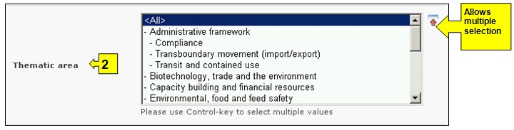

URL: http://bch.cbd.int/database/resources/
Article 20 of the Protocol establishes the BCH to facilitate the exchange of information and experience with LMOs among Parties in order to assist them in implementing the Protocol. To help fulfill this role, the BCH contains information submitted by Parties, governments and organizations that is relevant to biosafety and implementation of the Protocol.
The Biosafety Information Resource Centre (BIRC) contains electronic catalogues of biosafety-related publications and information resources for policymakers, educators, researchers, and the general public. BIRC records may be registered by all BCH account-holders.
The search interface for the BIRC can be accessed from the Finding Information drop down menu on the navigation bar, or from the link in the left hand menu of the Finding Information page, or from the link in the Biosafety Information Resource Centre text on the same page.

Figure 82
These links enable users to access electronic catalogues of biosafety-related publications and information resources as follows:
-
Graphic resource;
-
Guidance materials for risk assessment and risk management;
-
News services (including email listservs);
-
One-off publications (monographs)
-
Reports;
-
Series / periodical
-
Teaching materials (including manuals, toolkits and presentations)
-
Website, online reference or search tool
On the Search the Biosafety Information Resource Centre (BIRC) page there are six search criteria boxes provided for refining searches in this database. Each of them has a drop down menu from which it is possible to select the required criteria. The default setting for each drop down menu is the first item at the top of the menu list. On the right side of each box, a button allows the user to activate multiple selections. Once in the multiple selection mode it is possible to add more criteria to the selection by clicking on the relevant criteria while pressing the Ctrl (Control) key.

Figure 83
Box 1 [Publication year] lists options for the publication date of the article. It allows the user to choose the exact year of the publication(s) searched by only the year box. Time ranges can also be filtered by selecting either earlier or later than the year indicated in the year box.

Figure 84
Box 2 [Thematic area] lists the major thematic areas of the available publication and allows the user to narrow a search to one or more of these.

Figure 85
Box 3 [Type of record] lists the types of records stored in the BIRC. This allows the user to narrow the search to a specific source of information.

Figure 86
Box 4 [Language] allows a user to limit the search to documents in one or more languages.

Figure 87
Box 5 [Date of record] allows the user to narrow the search according to the date records have been registered in the BCH. The drop down menu provides a number of options for limiting the search to only those records submitted within the selected interval of timeframe (e.g. ‘last day’, ‘last month’, ‘last year’, etc.).

Figure 88
Box 6 [Keyword search] provides an opportunity for using keywords to narrow the search. The user can use standard keyword syntax (combination of AND / OR operators) to search with multiple words or core parts of words (e.g. “Import OR Export”). A search that is made by using keywords only produces results of records containing exactly the searched text and not possible synonyms that have not been inserted (i.e. a search with the single keyword “Maize” will produce a list of records containing the word “Maize” but not the words “Corn” or “Zea mays”).

Figure 89
The search page offers three buttons to produce a record list. The Search Now button (both at the top and bottom of the search interface) allows the user to activate a search based on the search criteria selected in the search facility boxes. The search results are sorted alphabetically by default according to country name. The Browse all records (at the bottom of the search interface) allows the user to obtain a list of all records in this database.

Figure 90
The Search Results pages have a sorting facility above the list of records. This can be used to sort the records according to criteria specific for that category of information. Note that the sorting criteria change when the user selects different search criteria.

Figure 91
Example: A user wishes to identify articles written recently about liability issues. The user selects (i) later than and 2006 in the publication year boxes and (ii) Liability and redress in the Thematic area box. Clicking on the Search now button, calls up the search results. The results are presented in alphabetical order based on the titles of the articles.

Figure 92

Figure 93